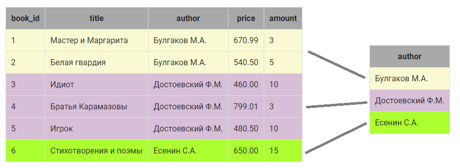
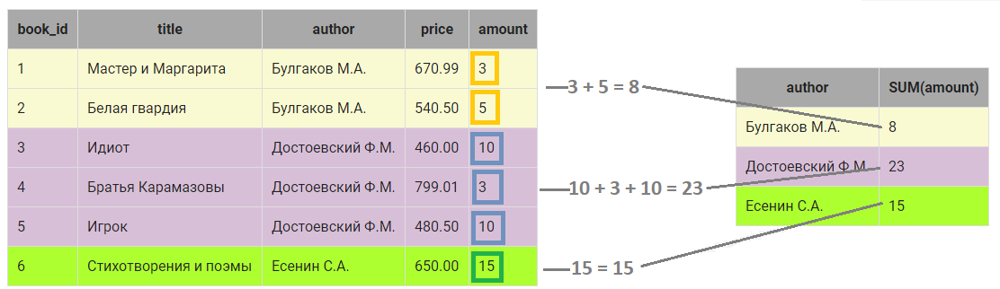
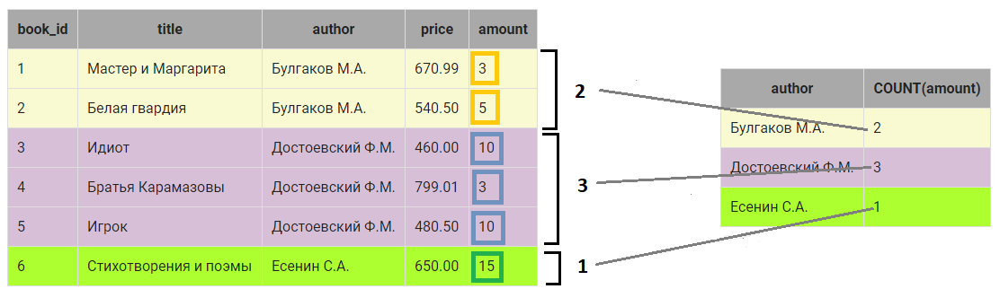

Comparison predicates (предикаты сравнения)
Это операторы, используемые в WHERE для сравнения значений:
- =, <> или != — равно / не равно
- <, >, <=, >= — меньше, больше и т.д.
- IN — проверка на вхождение в список
- BETWEEN — проверка диапазона (включительно)
- IS NULL / IS NOT NULL — проверка на пустое значение
Примеры:
- SELECT * FROM employees WHERE salary > 5000;
- SELECT * FROM employees WHERE salary BETWEEN 5000 AND 10000;
- SELECT * FROM employees WHERE salary IS NULL;
Logical operators (логические операторы)
Это операторы, используемые в WHERE для логических операций:
- AND — логическое И
- OR — логическое ИЛИ
- NOT — логическое НЕ
Примеры:
- SELECT * FROM employees WHERE salary > 5000 AND salary < 10000;
- SELECT * FROM employees WHERE salary > 5000 OR salary < 10000;
- SELECT * FROM employees WHERE NOT salary > 5000;
Checking for substring (LIKE)
Оператор LIKE используется для поиска по шаблону в строках. Поддерживает подстановочные символы:
- % — любое количество символов (включая ноль)
- _ — один символ
Примеры:
- SELECT * FROM employees WHERE name LIKE 'John%';
- SELECT * FROM employees WHERE name LIKE '_ohn%';
Total values. Aggregate functions (агрегатные функции)
Функции, которые обрабатывают группы строк и возвращают одно значение:
- COUNT() — количество строк
- SUM() — сумма значений
- AVG() — среднее значение
- MAX() — максимальное значение
- MIN() — минимальное значение
Примеры:
- SELECT COUNT(*) FROM employees;
- SELECT SUM(salary) FROM employees;
- SELECT AVG(salary) FROM employees;
- SELECT MAX(salary) FROM employees;
- SELECT MIN(salary) FROM employees;
Sorting data (Сортировка данных)
ORDER BY — это оператор, который сортирует результаты запроса по указанным столбцам в возрастающем (ASC) или убывающем (DESC) порядке.
Примеры:
- SELECT column1,column2 FROM table_name ORDER BY column1 [ASC|DESC], column2 [ASC|DESC], ...;
Grouping data (группировка данных)
Оператор GROUP BY используется для группировки строк по одному или нескольким столбцам. Обычно используется вместе с агрегатными функциями. При группировке над элементами столбца, входящими в группу можно выполнить различные действия, например, просуммировать их или найти количество элементов в группе.
Примеры:
- SELECT author, SUM(amount) COUNT(amount) FROM book GROUP BY author;
- В таблице book определяются строки, в которых в столбце author одинаковые значения: 
-
Вместо каждой группы в результирующий запрос включается одна запись.
Запись как минимум включает значение столбца, по которому
осуществляется группировка (в нашем случае это author):

- Дальше можно выполнить вычисления над элементами КАЖДОЙ группы в отдельности, например, посчитать общее количество экземпляров книг каждого автора. Для этого используется групповая функция SUM(), а в скобках указывается столбец, по которому нужно выполнить суммирование ( в нашем случае amount): 
- Также можно посчитать, сколько записей относится к группе. Для этого используется функция COUNT(), в скобках можно указать ЛЮБОЙ столбец из группы, если группа не содержит пустых значений (ниже приведен пример, в котором показано, как работает COUNT(), если в группе есть пустые значения): 
Filtering data by totals (HAVING)
HAVING используется для фильтрации групп, созданных с помощью GROUP BY. В отличие от WHERE, HAVING работает с агрегатными функциями.
Примеры:
- SELECT department, COUNT(*) FROM employees GROUP BY department HAVING COUNT(*) > 10;
Join operations (LEFT, RIGHT, FULL, INNER JOIN)
JOIN используется для объединения строк из двух или более таблиц на основе связи между ними. Поддерживаются различные типы JOIN:
- INNER JOIN — возвращает только совпадающие строки
- LEFT JOIN — возвращает все строки из левой таблицы и совпадающие строки из правой.Если соответствия нет, возвращает NULL для всех столбцов правой таблицы.
- RIGHT JOIN — возвращает все строки из правой таблицы и совпадающие строки из левой.Если соответствия нет, возвращает NULL для всех столбцов левой таблицы.
- FULL JOIN — возвращает все строки из обеих таблиц
Примеры:
- SELECT * FROM employees INNER JOIN departments ON employees.department_id = departments.id;
- SELECT * FROM employees LEFT JOIN departments ON employees.department_id = departments.id;
- SELECT * FROM employees RIGHT JOIN departments ON employees.department_id = departments.id;
- SELECT * FROM employees FULL JOIN departments ON employees.department_id = departments.id;
Subqueries (подзапросы)
Подзапрос — это запрос, который используется в другом запросе.Вложенный запрос, возвращающий одно значение, может использоваться в условии отбора записей WHERE как обычное значение совместно с операциями =, <>, >=, <=, >, <. Он может быть использован в качестве условия WHERE, FROM или HAVING.
Примеры:
- SELECT * FROM employees WHERE salary > (SELECT AVG(salary) FROM employees);
- SELECT * FROM employees WHERE department_id IN (SELECT id FROM departments WHERE name = 'IT');
- SELECT * FROM employees WHERE salary = (SELECT MAX(salary) FROM employees);
UNION (as opposed to JOIN)
UNION объединяет результаты двух или более запросов в один набор строк. В отличие от JOIN, который расширяет строки по столбцам, UNION добавляет строки. JOIN — горизонтальное объединение (по строкам), UNION — вертикальное (по столбцам одинаковой структуры).
Примеры:
- SELECT * FROM employees WHERE salary > 5000 UNION SELECT * FROM employees WHERE salary < 10000;
Checking for records (EXISTS)
EXISTS используется для проверки наличия строк в подзапросе. Он возвращает true, если подзапрос возвращает хотя бы одну строку, и false в противном случае.
Примеры:
- SELECT * FROM employees WHERE EXISTS (SELECT * FROM departments WHERE employees.department_id = departments.id);
Using the keywords SOME|ANY and ALL
SOME и ANY используются для проверки условия для некоторых значений в наборе. ALL используется для проверки условия для всех значений в наборе.
Примеры:
- SELECT * FROM employees WHERE salary > ANY (SELECT salary FROM employees WHERE department_id = 1);
- SELECT * FROM employees WHERE salary > ALL (SELECT salary FROM employees WHERE department_id = 1);
Subqueries in the FROM and SELECT clauses
Подзапросы могут использоваться в качестве таблиц в запросе. Это позволяет использовать результаты одного запроса в другом.
Примеры:
- SELECT * FROM (SELECT * FROM employees WHERE salary > 5000) AS employees_salary_gt_5000;
CASE operator
CASE используется для выполнения различных действий в зависимости от условия.
Примеры:
-
SELECT name, salary,
CASE WHEN salary > 5000 THEN 'High'
ELSE 'Low'
END AS salary_level
FROM employees;
COALESCE() — замена простому CASE для NULL
COALESCE используется для замены NULL на другое значение.
Примеры:
- SELECT name, COALESCE(salary, 0) AS salary FROM employees;
Data definition language commands: CREATE/ALTER/DROP (TABLE, DB)
CREATE, ALTER, DROP — команды для создания, изменения и удаления таблиц и баз данных.
Примеры:
- CREATE TABLE employees (id INT PRIMARY KEY, name VARCHAR(255), salary DECIMAL(10, 2));
- ALTER TABLE employees ADD COLUMN department VARCHAR(255);
- DROP TABLE employees;
Data definition language commands: MODIFY COLUMN/DROP COLUMN/RENAME COLUMN (TABLE, DB)
MODIFY, DROP, RENAME — команды для изменения и удаления столбцов из таблицы
Примеры:
- ALTER TABLE employees MODIFY name VARCHAR(255);
- ALTER TABLE employees DROP COLUMNtemp_notes;
- ALTER TABLE employees RENAME COLUMN name TO full_name;